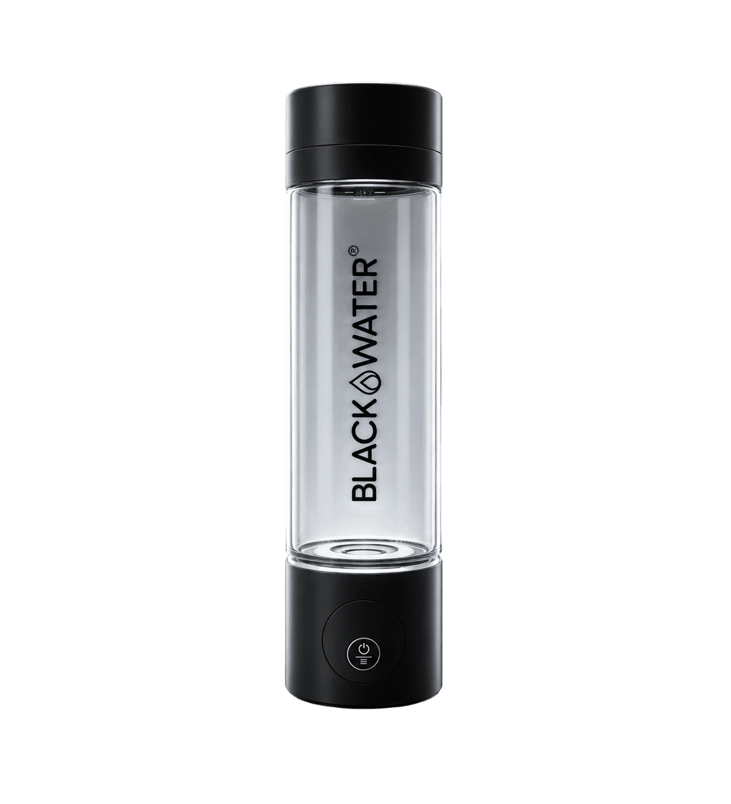

BLACKWATER Hydrogen Bottle
Portable SPE/PEM-Hydrogenflasche mit Live-PPB-Anzeige und zwei Programmen.
Technische Daten
| H₂-Konzentration | 1.500–3.000 ppb |
| Zyklus | 5–10 Minuten |
| Volumen | 260 ml |
| Technologie | SPE/PEM-Doppelkammer, platinbeschichtete Elektrode |
| Membran | DuPont Nafion™ 117 |
| Material | BPA-frei laut Anbieter |
| Filter | Keine Filterkartuschen erforderlich |
BLACKWATER Hydrogen Bottle: Einsatz und Auswahl
Für welche Anwendung ist das Modell gedacht?
Hydrogen Bottle gehört zur Produktkategorie Hydrogen Bottles. Die Einordnung hilft dabei, das Modell mit technisch ähnlichen Wasserfiltern und Wasseraufbereitungssystemen zu vergleichen.
Welche technischen Angaben sind besonders wichtig?
Für den direkten Produktvergleich sind insbesondere folgende Herstellerangaben relevant: H₂-Konzentration: 1.500–3.000 ppb; Volumen: 260 ml; Programme: 5 / 10 Minuten. Die Werte sollten immer zusammen mit Wasserqualität, verfügbarem Platz, Anschlussbedingungen und gewünschter Ausgabemenge bewertet werden.
Was sollte vor der Auswahl geprüft werden?
Vor der Entscheidung sollten Installationsart, Filterwechsel, laufende Kosten, Ersatzteilversorgung und die Eignung für die örtliche Wasseranalyse geprüft werden. Die verlinkte Herstellerquelle enthält die jeweils aktuellen Varianten und Hinweise.
Technologie und Wasserwissen
Diese Ratgeber erklären die eingesetzten Verfahren, Messwerte und Grenzen unabhängig von einzelnen Herstellerangaben.
Wasserwissen entdecken · Alle Filtertechnologien · Produkte vergleichen